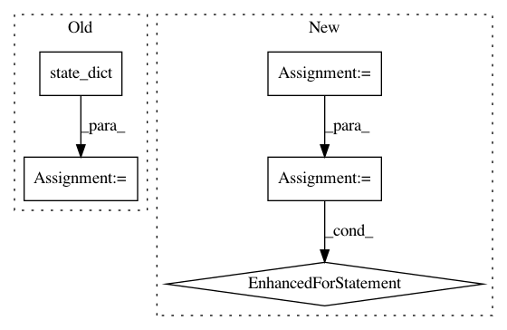

b708d24f8a93d823d727435c24cbcd5713252640,catalyst/rl/core/trainer.py,TrainerSpec,_update_sampler_weights,#TrainerSpec#,139
Before Change
def _update_sampler_weights(self):
if self.epoch % self.weights_sync_period == 0:
state_dict = self.algorithm.__dict__[
self._weights_sync_mode].state_dict()
state_dict = {
k: v.detach().cpu().numpy()
for k, v in state_dict.items()
}
After Change
def _update_sampler_weights(self):
if self.epoch % self.weights_sync_period == 0:
checkpoint = self.algorithm.pack_checkpoint(with_optimizer=False)
for key in checkpoint:
checkpoint[key] = {
k: v.detach().cpu().numpy()
for k, v in checkpoint[key].items()
}
self.db_server.save_checkpoint(
checkpoint=checkpoint,
epoch=self.epoch
)
In pattern: SUPERPATTERN
Frequency: 4
Non-data size: 5
Instances
Project Name: catalyst-team/catalyst
Commit Name: b708d24f8a93d823d727435c24cbcd5713252640
Time: 2019-07-02
Author: scitator@gmail.com
File Name: catalyst/rl/core/trainer.py
Class Name: TrainerSpec
Method Name: _update_sampler_weights
Project Name: NVIDIA/sentiment-discovery
Commit Name: 7b467f99e870bec93e3659b55b0ea068867f1593
Time: 2018-08-09
Author: raulp@dbcluster.nvidia.com
File Name: apex_utils/apex/reparameterization/__init__.py
Class Name:
Method Name: apply_reparameterization
Project Name: PIQuIL/QuCumber
Commit Name: 3cb22adccb2deed60e56cd46491b26ed4209d6f4
Time: 2018-07-25
Author: gtorlai@uwaterloo.ca
File Name: qucumber/quantum_reconstruction.py
Class Name: QuantumReconstruction
Method Name: compute_batch_gradients